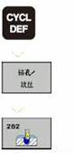
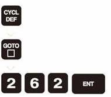

| 循环定义和调用 |
 用GOTO功能定义循环  调用循环 定义生效 以下循环在程序中定义时立即自动生效。 循环220圆弧阵列孔和循环221直线阵列孔 SL循环14轮廓几何尺寸 SL循环20轮廓数据 循环32公差 循环9停顿时间 坐标变换循环 侧头探测循环 调用生效 程序中定义的固定循环只能在单独调用后才能执行。 循环调用 TNC执行最新定义的加工循环。循环起点为该循环前的最后一个编程位置。 按下CYCL CALL M（循环调用M)软键。如果需要，可以在此输入辅助功能（M功能）。 循环调用阵列 CYCL CALL PAT（循环调用阵列）功能用于在单独的点位表中定义的每一个位置处调用最新定义的循环。 循环调用位置 CYCL CALL POS （循环调用位置）功能将用于调用最新定义的固定循环一次。起点为CYCL CALL POS(循环调用位置)程序段中定义的位置。 调用循环 M99 M99功能仅在其编程程序段中有效，调用最新编程的固定循环。M99编程在定位程序段的结尾处。TNC移至该位置，然后执行最新定义的固定循环。 M89 根据MP7440设置，每个定位程序段后，TNC自动执行最新定义的固定循环。为关闭M89作用，M99必须被编程在最后一个编程程序段。 |